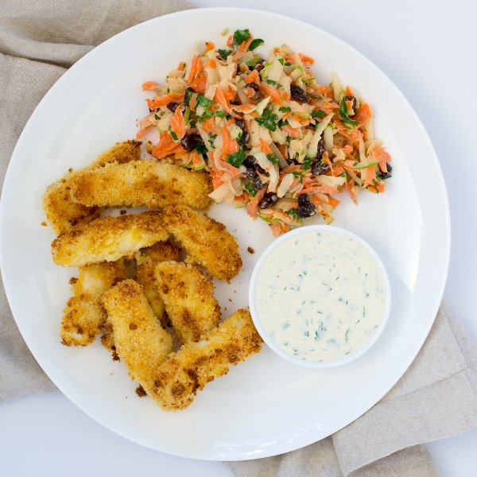

Panko-Crusted Fish Sticks with Lemon-Herb Dip & Carrot-Apple Slaw

Total Time
45 min
Nutrition (Per Serving)
682.9 kcalCalories
38.1 gProtein
58.2 gCarbs
34.2 gFat
Full nutrition table
| Calories | 682.9 kcal |
| Total fat | 34.2 g |
| Saturated fat | 5.8 g |
| Trans fat | 0.2 g |
| Cholesterol | 181.3 mg |
| Sodium | 889.2 mg |
| Carbohydrates | 58.2 g |
| Fiber | 6.7 g |
| Sugars | 27 g |
| Protein | 38.1 g |
| Potassium | 1066.6 mg |
| Calcium | 176.9 mg |
| Iron | 3.9 mg |
| Vitamin A | 241 IU |
| Vitamin C | 33.8 mg |
| Vitamin D | 55.7 IU |
Cookware
Ingredients
- 4 mediumcarrots
- 1 ½ lbcod fillet
- 2eggs
- 2Granny Smith apples
- 1 small bunchItalian (flat-leaf) parsley
- 1lemon
- ½ cupplain Greek yogurt
- ½ cupraisins
- black pepper
- Dijon mustard
- extra virgin olive oil
- mayonnaise
- panko bread crumbs
- salt
Steps
- Preheat the oven to 450°F and place the rack in the center position.
- Crack the eggs into a shallow bowl and season with salt and pepper, then beat with a whisk or fork.2 eggs
½ tsp salt
¼ tsp black pepper - On a large plate, combine bread crumbs and olive oil; mix together.2 cups panko bread crumbs
2 tbsp extra virgin olive oil - Slice the fish fillets crosswise into ½-inch-wide strips.1 ½ lb cod fillet
- Line a baking sheet with parchment paper or foil.
- Working in batches, dip the fish in the egg mixture (allowing excess to drip back into bowl), then coat with the bread crumbs (pressing gently to help them adhere); transfer to the baking sheet.
- Place the fish sticks in the oven and bake until the bread crumbs are golden brown and the fish is opaque in the middle, 15 to 18 minutes.
- While the fish cooks, wash and dry the fresh produce.2 Granny Smith apples
4 medium carrots
1 lemon
1 small bunch Italian (flat-leaf) parsley - Quarter the apples, then cut out the core and stem from each section. Using a box grater, coarsely grate the apple sections and transfer to a medium salad bowl.
- Peel the carrots, then trim off the ends; discard the peels and trimmings. Using a box grater, coarsely grate the carrots and add to the salad bowl.
- Using a knife, shave the parsley leaves off the stems at a downward angle, working away from your body; discard the stems and finely chop the leaves. Transfer ½ of the parsley to the salad bowl and the other ½ to a medium bowl (that will be used for the dip and salad dressing).
- Measure out the raisins and add to the salad bowl.½ cup raisins
- Juice the lemon and pour into the medium bowl with the parsley.
- Add mayo, yogurt, Dijon, salt, and pepper to the bowl with the parsley and lemon juice; whisk together.½ cup mayonnaise
½ cup plain Greek yogurt
2 tsp Dijon mustard
1 tsp salt
½ tsp black pepper - Reserve half of the sauce as a dip for the fish sticks and transfer the rest to the salad bowl; toss the salad to coat.
- To serve, place the fish sticks and slaw on a plate and serve with the remaining dip. Enjoy!